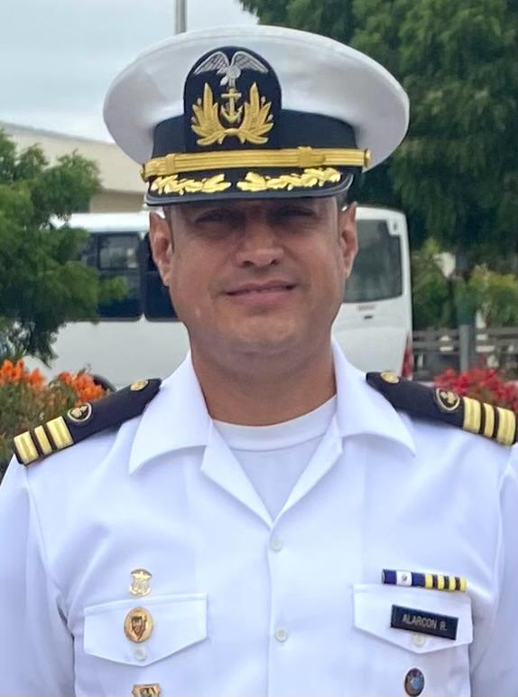

Israel Alarcón Cevallos
Datos Personales

Nacido en Santo Domingo de los Tsachilas
11 de Abril de 1979
45 años
Casado
Tiene una hija de 11 años
Ingresó a la Escuela Superior Naval en febrero de 1997, graduándose de Ingeniero en Sistemas e Informática
el 20 de octubre de 2002
Ingresó a la Escuela Superior Naval en febrero de 2007, graduándose de Teniente de Fragata Especialista en el mismo año
Actualmente ostenta el grado de Capitán de Fragata - Ingeniero.
Jefe del Centro de Tecnologías de la Información y Comunicaciones del Comando de Operaciones Navales
Jefe del Centro de Tecnologías de Información de la Dirección Nacional de Espacios Acuáticos
Jefe del Departamento de Desarrollo de la Dirección de Tecnologías de Información y Comunicaciones
Coordinador de Tecnologías de Información y Comunicaciones del Estado Mayor de la Armada
Jefe del Centro Primario de Comunicaciones de la Base Naval de Jaramijó
Jefe de Infraestructura de la Dirección de Tecnologías de Información y Comunicaciones de la Armada
Curso CNNA Cisco
Radioperador de la Red Interamericana de Comunicaciones Navales
Cartografia Digital
Administrador de Mando y Control
Animaciones con Flash
Cálculo de enlaces de microodas utilizando software de simulación
Fútbol
Ecuavoley
Natación
Programación
Redes de voz y datos